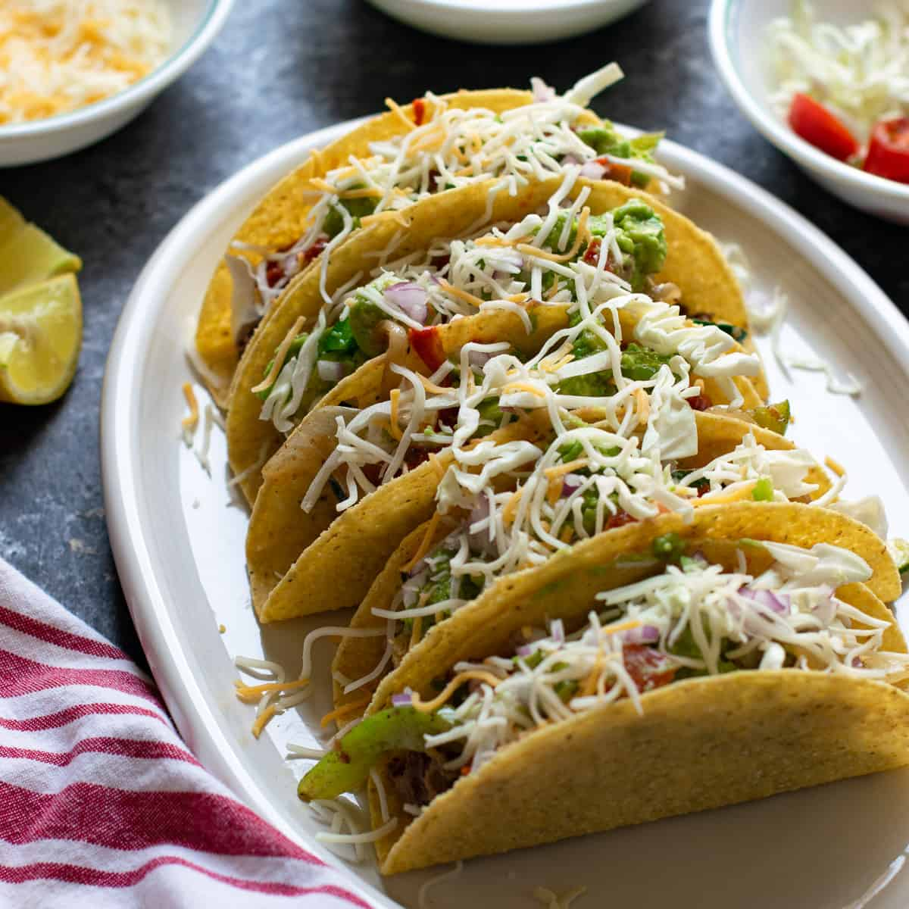

Tacos

Best homemade tacos recipe, that will get you lickin' your fingers all day!
Salt
Cumin
Chilli powder
Oil
Corn tortillas
Butter
Tomato sauce
Onion powder
Garlic powder
Pepper
Ground beef
Steps
Cook the ground beef until browned. Once cooked, add homemade seasoning and tomato sauce
Fry the corn tortillas in oil in a medium skillet. Once fried, fold them in shape of taco shells
And at last, fill the taco shells with the cooked beef and any additional toppings like shredded cheese and sour cream
Enjoy!
Back to Homepage